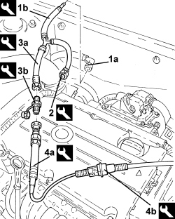

0510C10 FUEL SYSTEM - CHECK DELIVERY PRESSURE
- Path
- Procedures > 05 DIAGNOSTICS > 0510 VARIOUS CHECKS > 0510C CHECKS ON SYSTEMS > 0510C10 FUEL SYSTEM - CHECK DELIVERY PRESSURE
- Kind
- repair procedure (removal / refitting; the operation number is the code)
- Applies to
- engines: 1.8; all production periods
- Interactive page
- https://sloeber94.github.io/elrnDB-fCrm/en/#/194000169
Applies to: engines: 1.8; all production periods
- Disconnect the front fuel pipe rapid connector from the rail.
1. Connect the front fuel delivery pipe (1a) to the tool connector (1b).
Tool | Description | Function | Validity |
|---|---|---|---|
1860955000 | Connector kit | System pressure check |
2. Connect the tool rapid connector to the rail.
Tool | Description | Function | Validity |
|---|---|---|---|
1860955000 | Connector kit | System pressure check |
3. Connect the tool (3a) ot the three-way connector and to the tool (3b).
Tool | Description | Function | Validity |
|---|---|---|---|
1870885000 | Rapid attachment connector | System pressure check |
Tool | Description | Function | Validity |
|---|---|---|---|
1870791000 | Connector | Oil pressure check | 1.8 |
4. Connect the 5 bar transducer (4a) to the tool (3b) and to the EX 01 cable (4b).
Tool | Description | Function | Validity |
|---|---|---|---|
1806338000 | Examiner transducers kit 2 | System pressure check |
Tool | Description | Function | Validity |
|---|---|---|---|
1806337000 | Examiner transducers kit 1 | System pressure check |

Applies to: engines: 1.8; all production periods
- Connect the EX 01 cable to the Examiner using the SAM card.
- Select "instrument" on the Examiner and carry out the "FUEL SYSTEM PRESSURE TEST".
Topics that link to this page (10)
- B010 ENGINE DOES NOT START (UNDER ANY CIRCUMSTANCES)
- B020 ENGINE STARTS, AND CUTS OUT STRAIGHT AWAY
- D001 ENGINE NOT RUNNING SMOOTHLY / (HESISTANT)
- D002 ENGINE NOT RUNNING SMOOTHLY / (LOSING POWER)
- D003 ENGINE NOT RUNNING SMOOTHLY / (IRREGULAR OPERATION)
- D010 ENGINE IDLE IRREGULAR
- D021 ENGINE CUTS OUT WHILST RUNNING (THEN RESTARTS)
- W010 BLACK EXHAUST FUMES
- W01 HIGH CO EMISSIONS
- W02 CO EMISSIONS LOW, NOX EMISSIONS HIGH